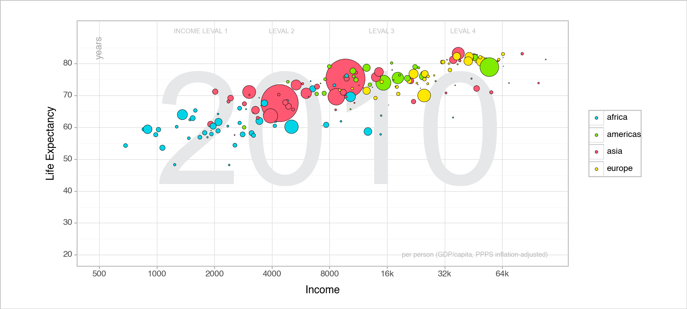
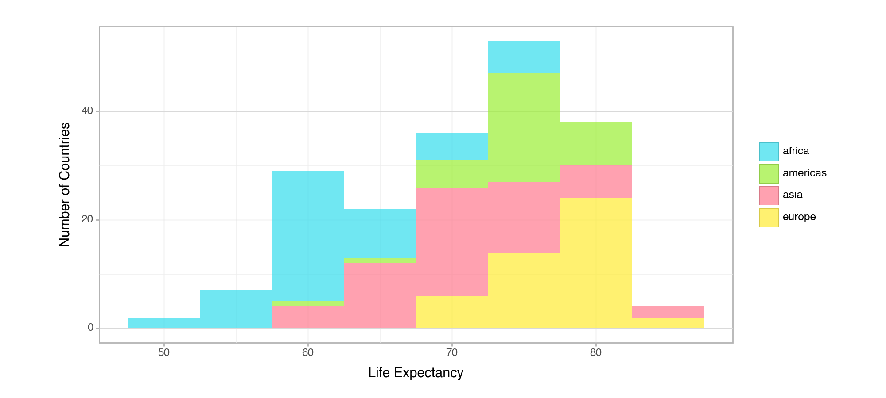
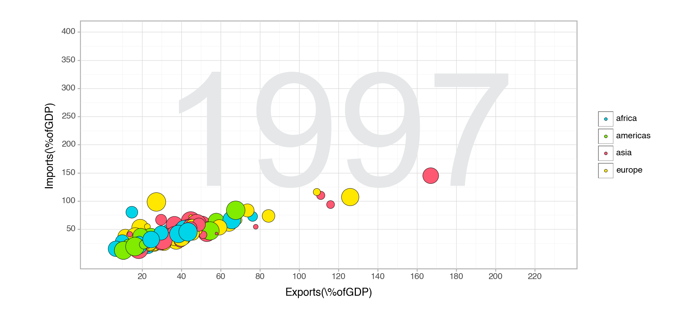
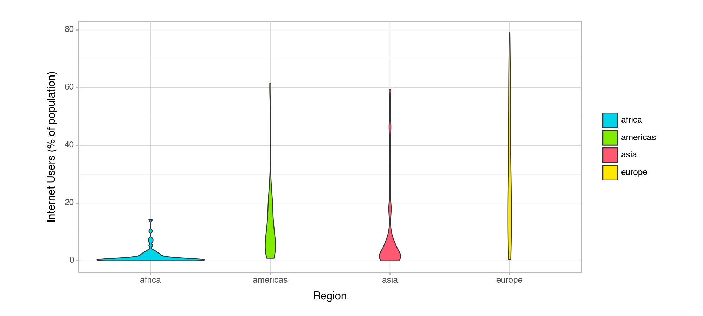

1. Identify, and list here, what aesthetics are being used and which variables are being mapped to each aesthetic.
The Aesthetics are income on the x-axis, Life expectancy on the y-axis, and colored by the 4 region, size is the population.
2. Import the q1data.csv dataset.
import pandas as pdgapminder = pd.read_csv('/Users/shreyachidambaram/Desktop/ML/Machine_Learning_Repository/Lab_1/Data/q1data.csv')# This is the data I used the first part of the grammer of graphicsgapminder.head()
income
life_exp
population
year
country
four_regions
six_regions
eight_regions
world_bank_region
0
1910.0
61.0
29200000.0
2010
Afghanistan
asia
south_asia
asia_west
South Asia
1
11100.0
78.1
2950000.0
2010
Albania
europe
europe_central_asia
europe_east
Europe & Central Asia
2
11100.0
74.7
36000000.0
2010
Algeria
africa
middle_east_north_africa
africa_north
Middle East & North Africa
3
46900.0
81.9
84500.0
2010
Andorra
europe
europe_central_asia
europe_west
Europe & Central Asia
4
7680.0
60.8
23400000.0
2010
Angola
africa
sub_saharan_africa
africa_sub_saharan
Sub-Saharan Africa
3.Recreate the plot as best you can using plotnine.
from plotnine import ggplot,element_rect, geom_point, aes, scale_x_log10, ylab, xlab,theme_bw,theme_light,scale_y_continuous,scale_x_continuous, scale_fill_manual,guides,element_blank,scale_sizefrom plotnine import*filtered_data = gapminder.dropna(subset=["income", "life_exp", "population", "four_regions"]) # Resource: https://pandas.pydata.org/docs/reference/api/pandas.DataFrame.dropna.htmlp1=(ggplot(filtered_data, aes(x="income", y="life_exp", fill="factor(four_regions)", size="population")) + annotate('text', x=8000, y=55, label='2010', color='#E5E7E8', size=165, family="Arial") # Resource for font: Chat-GPT + annotate('text', x=1700, y=90, label='INCOME LEVAL 1', color='silver', size=7, family="Arial") # Resource for annontate https://stackoverflow.com/questions/59024019/add-text-to-figure-using-pythons-plotnine+ annotate('text', x=4500, y=90, label='LEVAL 2', color='silver', size=7, family="Arial")+ annotate('text', x=15000, y=90, label='LEVAL 3', color='silver', size=7, family="Arial")+ annotate('text', x=40000, y=90, label='LEVAL 4', color='silver', size=7, family="Arial")+ annotate("text", x =46000, y=20, label ='per person (GDP/capita, PPPS inflation-adjusted)', size =7, alpha =0.8, color ="darkgrey")+ annotate ("text",label='years', x=500, y=85, size =10, color ="darkgrey", angle ="vertical")+ geom_point(alpha=1,stroke=0.2) # we are adding a border and some transparency+ xlab("Income")+ ylab("Life Expectancy")+ scale_size(range=(0, 23))# this is the scale for the bubble size+ scale_y_continuous(limits=(20,90), breaks=range(20,90,10))# Resource for scale: https://pwwang.github.io/plotnine-prism/raw/axes/+ scale_x_continuous( trans='log2', breaks=[500, 1000, 2000, 4000, 8000, 16000, 32000, 64000], labels = ["500","1000","2000","4000","8000","16k","32k","64k"]) # this is transforming our data and incramenting it+ theme_light()+ theme(figure_size=(10,4.5), aspect_ratio=0.5) # Resource for size: https://stackoverflow.com/questions/46046908/ggplot-in-python-plot-size-and-color+ theme(rect = element_rect(fill ="white", color ="silver", size =1))+ scale_fill_manual(values={'europe':'#FFE700','asia':'#FF5872','americas':'#81EB00','africa':'#00D4E8' }) #Resource for manual colors function: Chat-GPT and I got the colors from canva+ theme(legend_title=element_blank()) + guides(size=False) # Resource for getting rid of element in key: https://github.com/has2k1/plotnine/issues/119 )p1

<Figure Size: (1000 x 450)>
4.What other geometries could you use here besides geom_point? Provide an actual plot of another geometry being used here and why it’s good or bad for visualizing these data.
The histogram, unlike the scatter plot, bins life expectancy into intervals and uses bars to show how many countries fall within each range, further broken down by region. At a glance, this visualization offers a clear picture of the distribution of life expectancy across regions. Notably, it highlights that Africa has the highest number of countries with a life expectancy around 75. While the histogram efficiently aggregates data and provides a macroscopic view, it does have limitations. One significant drawback is its lack of granularity; individual countries within each region are not discernible. This contrasts with the bubble plot, which, while possibly more cluttered, gives a detailed view of each country’s data point.
# we also create a stacked histogram to see the distribution of counties in the 4 regions's life expectancy# Resource: https://plotnine.readthedocs.io/en/stable/generated/plotnine.geoms.geom_histogram.htmlp2 = ( ggplot(filtered_data, aes(x="life_exp", fill="factor(four_regions)"))+ geom_histogram(binwidth=5, alpha=0.7, position="stack")+ xlab("Life Expectancy")+ ylab("Number of Countries")+ theme_light()+ theme(figure_size=(10,4.5), aspect_ratio=0.5)+ scale_fill_manual(values={'europe':'#FFEC32','asia':'#FF798E','americas':'#9AEF32','africa':'#33DDED'})+ theme(legend_title=element_blank()))p2

<Figure Size: (1000 x 450)>
Task 2
1.Identify, and list here, what aesthetics are being used and which variables are being mapped to each aesthetic.
The Aesthetics are exports on the x-axis, imports on the y-axis, and colored by the 4 regions, size is the energy.
2. Import the q2data.csv dataset.
import pandas as pdgapminder2 = pd.read_csv('/Users/shreyachidambaram/Desktop/ML/Machine_Learning_Repository/Lab_1/Data/q2data.csv')# This is the data I used the first part of the grammer of graphics#gapminder2['energy'] = pd.to_numeric(gapminder2['energy'], errors='coerce')filtered_data = gapminder2.dropna()filtered_data.head()
imports
exports
energy
year
country
four_regions
six_regions
eight_regions
world_bank_region
1
36.7
11.5
427
1997
Albania
europe
europe_central_asia
europe_east
Europe & Central Asia
2
22.5
22.6
825
1997
Algeria
africa
middle_east_north_africa
africa_north
Middle East & North Africa
6
12.9
10.4
1660
1997
Argentina
americas
america
america_south
Latin America & Caribbean
7
52.8
19.0
610
1997
Armenia
europe
europe_central_asia
europe_east
Europe & Central Asia
9
20.5
19.6
5550
1997
Australia
asia
east_asia_pacific
east_asia_pacific
East Asia & Pacific
3. Recreate the plot as best you can using plotnine.
from plotnine import ggplot, geom_point, aes, scale_x_log10, ylab, xlab,theme_bw,theme_light,scale_y_continuous,scale_x_continuous, scale_fill_manual,guides,element_blank,scale_sizefrom plotnine import*# resource for annontate https://stackoverflow.com/questions/59024019/add-text-to-figure-using-pythons-plotnine# energy is a string variable and it has to be converted to a floatp3=(ggplot(filtered_data, aes(x="exports", y="imports", fill="factor(four_regions)", size="energy"))+ annotate('text', x=120, y=200, label='1997', color='#E5E7E8', size=165, family="Arial") # Resource: Chat-GPT + geom_point(alpha=1,stroke=0.2)+ scale_size_discrete(range= (0,11))+ xlab("Exports(\%ofGDP)")+ ylab("Imports(\%ofGDP)")+ scale_y_continuous(limits=(0,400), breaks=range(50,450,50))+ scale_x_continuous(limits=(0,230), breaks=range(20,230,20))+ theme_light()+ theme(figure_size=(10,4.5), aspect_ratio=0.5) # Resource for size: https://stackoverflow.com/questions/46046908/ggplot-in-python-plot-size-and-color+ scale_fill_manual(values={'europe':'#FFE700','asia':'#FF5872','americas':'#81EB00','africa':'#00D4E8' }) #Resource for manual colors: Chat-GPT + theme(legend_title=element_blank()) + guides(size=False) )p3
/Users/shreyachidambaram/anaconda3/lib/python3.11/site-packages/plotnine/scales/scale_size.py:49: PlotnineWarning: Using size for a discrete variable is not advised.

<Figure Size: (1000 x 450)>
4. What other geometries could you use here besides geom_point? Provide an actual plot of another geometry being used here and why it’s good or bad for visualizing these data.
A violin plot can give insights into the density and distribution of internet users for each region. However, compared to a bubble plot, the violin plot does not convey the individuality of each country or the multi-dimensional relationships (like GDP and internet users simultaneously). So while the violin plot gives a summarized view of regional distributions, the bubble plot offers a more detailed perspective, allowing for the identification of specific countries and their unique attributes.And I belive when looking at specifc countries the bubble plot is still the best geometry.
# Create a violin plot using plotnine# Resource: https://plotnine.readthedocs.io/en/stable/generated/plotnine.geoms.geom_violin.htmlp6 = (ggplot(filtered_data, aes(x="four_regions", y="internet_users", fill="four_regions"))+ geom_violin()+ xlab("Region")+ ylab("Internet Users (% of population)") + theme_light()+ theme(figure_size=(10,4.5), aspect_ratio=0.5) # Resource for size: https://stackoverflow.com/questions/46046908/ggplot-in-python-plot-size-and-color+ scale_fill_manual(values={'europe':'#FFE700','asia':'#FF5872','americas':'#81EB00','africa':'#00D4E8' }) #Resource for manual colors: Chat-GPT + theme(legend_title=element_blank()) + guides(size=False) )p6

<Figure Size: (1000 x 450)>
Task 3
1. Identify, and list here, what aesthetics are being used and which variables are being mapped to each aesthetic.
The Aesthetics are individuals using the internet on the x-axis, GDP/capita on the y-axis, and colored by the 4 region, size is the income.
2.Import the q3data.csv dataset.
import pandas as pdimport numpy as npgapminder3 = pd.read_csv('/Users/shreyachidambaram/Desktop/ML/Machine_Learning_Repository/Lab_1/Data/q3data.csv')# This is the data I used the first part of the grammer of graphics# gapminder3['gdp']=np.log10(gapminder3['gdp'])gapminder3.head()
internet_users
gdp
income
year
country
four_regions
six_regions
eight_regions
world_bank_region
0
0.00456
330.0
1190.0
2001
Afghanistan
asia
south_asia
asia_west
South Asia
1
0.39000
2570.0
6780.0
2001
Albania
europe
europe_central_asia
europe_east
Europe & Central Asia
2
1.59000
3770.0
9230.0
2001
Algeria
africa
middle_east_north_africa
africa_north
Middle East & North Africa
3
NaN
10500.0
NaN
2001
American Samoa
NaN
NaN
NaN
NaN
4
11.30000
42600.0
35600.0
2001
Andorra
europe
europe_central_asia
europe_west
Europe & Central Asia
3.Recreate the plot as best you can using plotnine.
4. What other geometries could you use here besides geom_point? Provide an actual plot of another geometry being used here and why it’s good or bad for visualizing these data.
By overlaying a histogram with density lines, we obtain a holistic view ideal for analysis. This approach showcases the distribution of internet_users relative to gdp, segmented by four_regions and sized by income. It effectively conveys regional internet usage patterns and densities. However, I still lean towards the bubble plot as it distinctly represents each country, offering clearer individual insights which I think is more usefull.